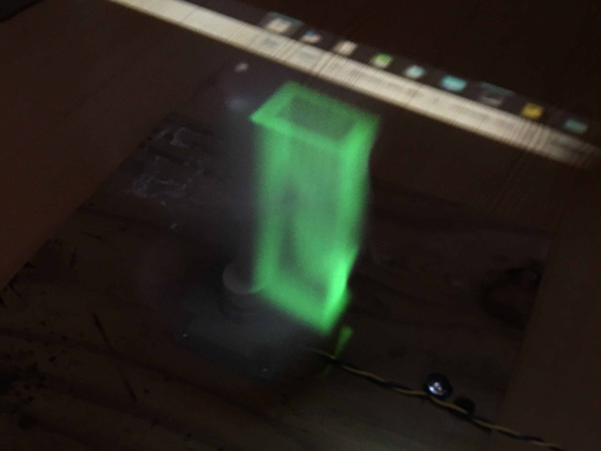
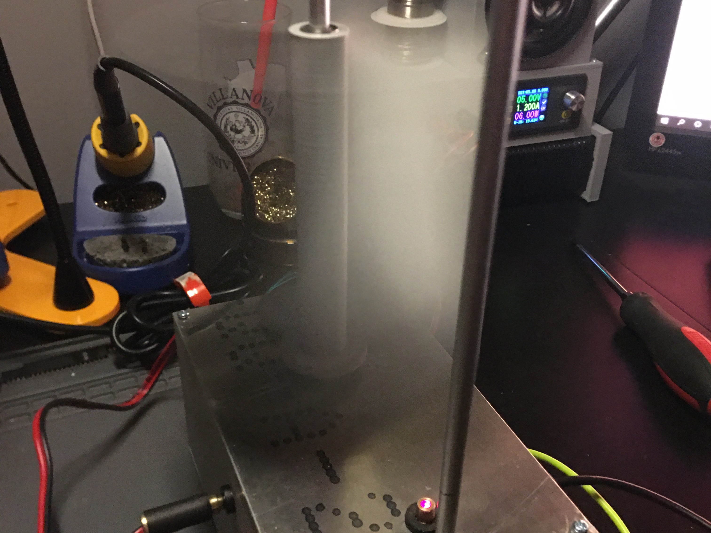

1 / 10

MkI helicoid mounted on small DC motor
2 / 10

Projected rectangular tube on MkI helicoid
3 / 10

PWM speed testing
4 / 10

MkII display software simulation
5 / 10

MKII display with integrated drive and laser
6 / 10

MkII helicoid spinning
7 / 10

MkIII stationary dot with offset timing
8 / 10

MkIII with high-res digital encoder
9 / 10

MKIII laser matrix design v3
10 / 10

MkIII still image from rotating wheel animation
Volumetric Display - Spinning Helicoid
This project showcases the culmination of over a year and a half worth of time and effort put into researching, designing, manufacturing, and iterating resulting in a successful volumetric display prototype.
What started out as a research writing assignment, turned into one of the most complex projects I have tackled. Now I am looking for ways to improve my prototype in a practical manner, but I will touch on that later.
At this point, you are probably wondering, what is a volumetric display? Well, its a complicated topic which is outside the scope of this portfolio, so I will only briefly describe the subject.